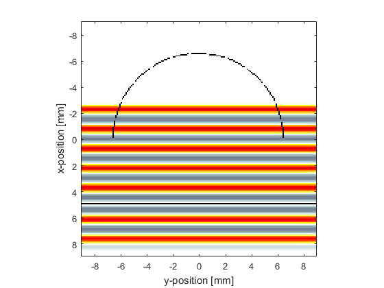
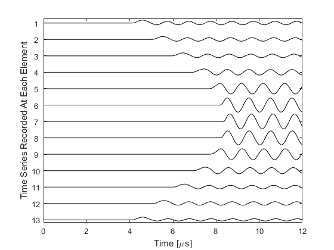

Focussed 2D Array With Directional Elements Example
This example demonstrates the use of k-Wave to compute the outputs from a curved detector array which consists of several elements, each of which consists of a number of grid points.
Contents
Define a focussed array of directional elements
To start with, a curved detector array is defined using the makeCircle function.
% define a semicircular sensor centred on the grid
semicircle_radius = 65; % [grid points]
arc = makeCircle(Nx, Ny, Nx/2, Ny/2, semicircle_radius, pi);
The grid points making up this curved array are divided up between a number of elements. This is achieved by calculating the angles from each grid point to the focus of the array and grouping the grid points with similar angles.
% find total number and indices of the grid points constituting the % semicircle arc_indices = find(arc == 1); Nv = length(arc_indices); % calculate angles between grid points in the arc and the centre of the % grid arc_angles = atan((kgrid.y(arc_indices)) ./ kgrid.x(arc_indices)); % sort the angles into ascending order, and adjust the indices accordingly [sorted_arc_angles, sorted_index] = sort(arc_angles); sorted_arc_indices = arc_indices(sorted_index); % divide the semicircle into Ne separate sensor elements Ne = 13; sensor.mask = zeros(Nx, Ny); for loop = 1:Ne % get the indices of the grid points belonging to the current element % (there is a two grid point gap between the elements) voxel_indices = sorted_arc_indices(floor((loop - 1) * Nv / Ne) + ... 2:floor(loop * Nv / Ne) - 1); % add the element to the sensor.mask sensor.mask(voxel_indices) = 1; end

Using an infinitely wide line source
To model a plane wave source parallel to one of the grid dimensions, two steps are necessary. First, source.p_mask is set so that it stretches across the domain.
source.p_mask = zeros(Nx, Ny); source.p_mask(140, :) = 1;
Secondly, the inputs to the simulation are set so that the perfectly matched layer is turned off on the two sides that source.p_mask meets.
input_args = {'PMLAlpha', [2, 0], 'DisplayMask', display_mask, 'PlotScale', [-0.75, 0.75]};
Running the simulation
The simulation is run and the time series are measured for every non-zero grid point in sensor.mask. These time series are then allocated to their relevant elements, and averaged together.
sensor_data = kspaceFirstOrder2D(kgrid, medium, source, sensor, input_args{:});
% split up the recorded data between the elements
element_data = zeros(Ne, kgrid.Nt);
for loop = 1:Ne
% find indices of the sensor grid points in the sensor mask
sensor_indices = find(sensor.mask == 1);
% extract indices of the grid points belonging to the current element
voxel_indices = sorted_arc_indices(floor((loop - 1) * Nv / Ne) + ...
2:floor(loop * Nv / Ne) - 1);
% indices of sensor_data that refer to the data for this element
data_indices = zeros(length(voxel_indices), 1);
for loop2 = 1:length(voxel_indices)
data_indices(loop2) = find(sensor_indices == voxel_indices(loop2));
end
% for one element per loop, average the time series from each of the
% element's grid points to give one time series for the whole element
element_data(loop, :) = mean(sensor_data(data_indices, :), 1);
end

The time series corresponding to the different elements are plotted. The directionality introduced by the large size of the detector (because it averages the incoming wave over its area) is clearly seen.
